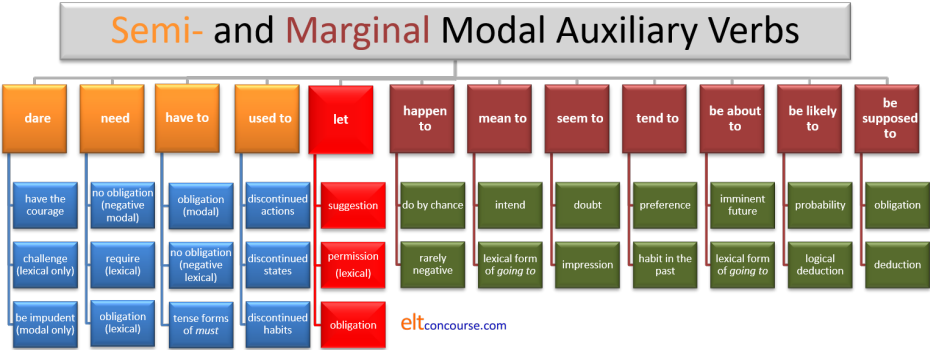

Semi- and marginal modal auxiliary verbs

There is a general, essentials
guide to modality
and a
guide to central modal
auxiliary verbs taken one by one on this site (both those links will open in new
tabs).
This
guide
focuses only on semi-modal auxiliary verbs and what are called marginal modal
auxiliary verbs (including the verb let).
In some analyses, marginal modal auxiliary verbs are also placed in the
category of semi-modal auxiliary verbs but that leads to too much
imprecision for our purposes.
In the following you will find reference to dynamic, deontic, alethic
and epistemic modality. If the terms are unfamiliar, you can
safely ignore them but there is a link at the end to a guide to types of
modality in which
they are explained.
Very briefly, however:
- dynamic modality refers to the language user's perception of willingness or ability
- deontic modality refers to the user's perception of obligation or its lack
- epistemic modality refers to the language user's perception of the truth of a proposition
- alethic modality refers to the truths which are independent of the language users
Semi-modal auxiliary verbs
There is a certain amount of disagreement about what constitutes a
semi-modal auxiliary verb. For the purposes of this guide, we are considering
verbs which can act both as modal auxiliary verbs and as 'ordinary' lexical
or main verbs.
When they are modal auxiliary verbs, they follow the usual rules for
central modal auxiliary verbs for forming questions and negatives and
not using the -s / -es inflexion on the 3rd person. They
also do not occur reliably with other modal auxiliary verbs.
When these verbs operate as lexical or main verbs, they may co-occur with
central modal auxiliary verbs just like other main or lexical verbs.
The four verbs which are most often defined as semi-modal auxiliary
verbs are dare, need, have to and used to. If
you are here only to consider one of them or marginal modal auxiliary
verbs and the verb let, use this menu:
dare | need | have to | used to | marginal modal auxiliary verbs | let
 |
dare |
Dare is an ancient word with connections to words pre-dating Old
English. It comes from a presumed Proto-Indo European root and
occurs in Sanskrit, for example, as dadharsha. It also
has cognate forms in Old Norse, Old High German, Gothic, Old Persian,
Ancient Greek etc. In all these languages it had the meaning of
to be bold.
An older English form had the irregular past tense durst which
survived into the late 19th century but only occurs in some dialects
today.
The verb still retains its meaning of have the courage
to.
Consider these examples:
| Modal auxiliary verb | Lexical or main verb |
|
|
The contention here is that all these sentences are correct
grammatically. What conclusions can you draw?
Think for a
little while and then click here.
Conclusions
- Choices:
- It is the speaker / writer's choice whether to treat the verb as a modal auxiliary and make the negative as dare not / dared not or as a lexical or main verb and make the negative as doesn't dare / didn't dare. Sentences 1 to 5 on the left carry the same meanings as sentences 6 to 10 on the right respectively.
- It is also the speaker's choice whether to make the questions as modal auxiliary verbs would and use dare she? or as a lexical or main verb and use does she dare?
- Whether dare takes the 3rd-person 's' is, again, a matter of choice.
- It is also the speaker's choice whether the lexical or main verb
only is followed by the infinitive with or without to.
(Sentences 6 to 10) so we allow both:
She didn't dare ask
and
She didn't dare to ask
There is a limitation to this set out in point 3, below.
- Co-occurrence
- Unlike the central or pure modal auxiliary verbs, this verb can
co-occur with will and would so we encounter,
e.g.:
She wouldn't dare phone her sister
She won't dare do that - But the verb cannot co-occur with other central modal auxiliary
verbs so we do not allow, e.g.:
*She must dare phone
*They can't dare come
etc.
- Unlike the central or pure modal auxiliary verbs, this verb can
co-occur with will and would so we encounter,
e.g.:
- Modal use and lexical use cannot be mixed.
If the verb is treated as a modal, then all the modal rules
apply:
- the infinitive with
to cannot be used:
*She dared not to phone her mother - the 3rd-person
's' cannot be used
*She dares not go - the question forms require inversion of
verb and subject and cannot be formed with the do
operator:
*Does she dare come?
- the infinitive with
to cannot be used:
- Less obviously, sentences 1 to 4 and 6 to 8 are all questions or
negatives and sentences 5 and 10 are also non-assertive:
- Modal use is confined to
non-assertive uses of the verb – negatives and
questions mostly, as in, e.g.:
I daren't ask again
Dare you try?
but not:
*She dare try - If you want to make a positive,
assertive statement then you must choose the non-modal, lexical
form – you can have
She often dares to swim at night
but not
*She often dare swim at night
- Modal use is confined to
non-assertive uses of the verb – negatives and
questions mostly, as in, e.g.:
To many, the modal forms of the verb sound slightly stilted and old fashioned and the non-modal, lexical forms are, in fact, more common as corpus research has shown. The non-modal forms are also more common in American English.
In most cases, the verb expresses dynamic modality because it refers
to ability and willingness rather than to obligation imposed or likelihood imagined.
Other forms of modality occur in the three common set phrases with dare
Set phrases
- I daresay he will come later
This is written as one word and is only used in the first person singular. It means something like I believe. This is the only common use of the verb with an assertive sense. It refers to epistemic modality in that it expresses the speaker's view of likelihood. - How dare you!
This is an expression of outrage and can refer to deontic modality in that it expresses the speaker's view that something is forbidden. It is not, incidentally, a question. - You dare!
Don't you dare!
This is used as a threat of retribution or punishment if somebody does something and is also deontic in effect, expressing the speaker's desire to forbid an action.
Imperatives
Unusually for a modal auxiliary verb, dare can be used
in the imperative mood so we allow, for example:
Go on, dare ask a question
Please don't dare to ask
although this is a rare use of the verb.
Transitive uses
- There is a transitive use of dare to mean challenge in expressions such as
I dare you to jump
He dared me to do it
Did he dare you to do it?
etc. In this use the verb is always a lexical or main verb, never modal so we do not allow:
*I dare you go
*She dared me ask
*Dared he you to do it? - Another, even rarer transitive use of the verb occurs in expressions
such as:
She dared the water
I dared a question
where the meaning is something like have the courage to try.
Again, the verb is always lexical, never modal, in this meaning.
Here's a summary of this verb, which, as all summaries do, leaves
out some detail:

 |
need |
Need is the only semi-modal which fits into the notions of
possibility, necessity etc. along with the central modal auxiliary verbs.
It does, however, have two non-modal, lexical uses. Consider these examples:
| Modal auxiliary verb | Lexical or main verb 1 | Lexical or main verb 2 |
| deontic meaning | deontic meaning | requirement (non modal meaning) |
|
|
|
What conclusions can you draw?
Think for a
little while and then click here.
Conclusions
- Often it is the speaker / writer's choice whether to treat the verb as a modal auxiliary and make the negative as needn't and the question as need she? or treat it as a lexical or main verb and make the negative with doesn't need and the question with does she need? Sentences 1 and 5, 2 and 6 and 3 and 7 all carry the same meaning.
-
There is no assertive, positive use of the modal auxiliary verb. You cannot have
*She need phone her mother
The modal form of the verb is only used in non-assertive ways, usually questions or negatives, as in:
Need you be so impatient?
You needn't take it with you
etc. -
The modal auxiliary verb has no past form so, e.g.:
*Needed she ask?
and
*I needed not ask
are not allowed in Modern English and the past form of choice is the lexical or main verb (1). -
The modal form is followed by the bare infinitive; the lexical form
by the infinitive with to, as in:
I don't need to go
I needn't go
but not
*I don't need go
*I needn't to go -
There are two forms of the lexical or main verb:
- The first carries the sense of a modal auxiliary verb and is followed by
the infinitive with to. The meaning conveyed is
one of necessity or lack of it as in, for example:
I need to speak to you
It is also used as the negative of must / have to (see the guide to central modal auxiliary verbs) and implies lack of obligation as in, for example:
You don't need to pay for this - The second lexical or main verb (sentences 8, 9 and 10) is perfectly
'normal' in the sense that it is transitive and follows the form
of a regular verb and means something akin to require. It is often used with a gerund,
e.g.:
The car needs washing
In this sense, there are no restrictions concerning assertive and non-assertive uses so all these are possible:
I needed some help
Did you need any help?
I didn't need any help
Didn't you need some help
etc.
- The first carries the sense of a modal auxiliary verb and is followed by
the infinitive with to. The meaning conveyed is
one of necessity or lack of it as in, for example:
- However, the verb may not be used in the imperative in any
of its forms with any of its meanings so all the following are
forbidden:
*Need help
*Don't need to go
*Needn't come early
There is fruitful ground for confusion
here, not least in the distinction between, for example:
She needn't have
phoned her mother (but did)
and
She
didn't need to phone her mother (so didn't).
A further source of confusion is that the verb is usually used to
refer to obligation, i.e., deontic modality, but it can be used to refer
to logical necessity, i.e., alethic modality, as in, for example:
A rectangle needs to have four sides
How many sides does a rectangle need to have?
and in this case, it is always formed as a lexical or main verb.
When the verb expresses a positive universal truth, it cannot be used as
a modal auxiliary so we do not allow:
*The answer need be 6
However, in the negative, both
A rectangle doesn't need to have four equal sides
like a square
and
A rectangle needn't have four equal sides like a
square
are possible.
The negative is frequently formed with can't, as in:
A square can't have more than four sides
and this implies necessity rather than lack of obligation.
Questions can be formed in either way but the modal use is often very
doubtful:
Does the metal need to be heated to melt?
?Need the metal be heated to melt?
Again, to many, the modal form, especially the question, sounds formal and stilted and again, the form is rarer in American English.
|
|
need as a face-saving device |
There are times when need, must and have to may be
used interchangeably to express obligation or its lack but there are some important differences in nuance.
For example:
You must buy a ticket
You have to buy a ticket
You need to buy a ticket
may be considered synonymous and, in many cases, they are.
All of these are examples of deontic modality and that is to do with
obligation and duty. So, for example,
You have to fill in a form
or
You must fill in a form
refer to the hearer’s duty and the obligation placed on him/her by or
via the
speaker. It is sometimes used casually in spoken language to mean
that this is not an obligation on you personally but a general truth.
However, in
You need to fill in a form
The semi-modal need implies that it is a general rather than
personal requirement, to do with the logical necessity of something
being true.
This form is often used, for example, in the passive as:
To be processed, the form needs to be submitted before
the end of the month
which states a conditional necessity rather than a personal obligation.
The verb is often used by corporate bodies to reduce the directness of
an obligation placed on customers so while:
You must return your completed form by the end of the
month
sounds rude and demanding,
You need to return your completed form by the end
of the month
sounds far less threatening although the meaning is identical.
The verb often implies some undesired consequence in the way that
must and have to do not. For example, choosing the
formulation
You need to be at the station by 6 (or you'll
miss the train)
expresses the preference for avoiding the unwelcome consequence while
You must be at the station by 6
expresses more direct obligation.
Face-saving for the hearer is often the motivation for selecting
need over the more direct model verbs of obligation. In, for
example:
Everyone needs to be in the office by 8 o'clock
no personal obligation is implied because this is simply company policy
and not my imposition on you or anyone else. It is more polite and
distances the speaker from any sense of assumed authority. If, on
the other hand, I say:
Everyone must be in the office by 8 o'clock
I am laying an obligation on each member of the group personally.
Compare, too, the use of need in, for example:
The bank needs to have these figures tomorrow
with
You have to / must give the bank the figures tomorrow
because the first saves the face of the hearer by not imposing authority
on him/her.
Finally, we can ignore (if we wish) any statement using must
or have to because we are independent operators. So, for
example:
You have to come at 6 o’clock
is an obligation hearers can ignore if they choose and that might upset someone
else, but
You need to come at 6 o’clock
is probably not, because it implies that the hearers will miss something important
if they don’t, not that someone else will be upset.
Here's a summary of this verb, which, as all summaries do, leaves
out some detail:

There is an argument that both lexical forms of this verb are
transitive but the first one requires a nominalised verb phrase
rather than a noun-phrase object.
 |
have to |
Elsewhere on this site, have to is considered as a modal
auxiliary verb proper primarily because it acts for the true modal
auxiliary verb must in other tenses (past and future) and
as a straightforward alternative to must in other contexts.
However, it shares structural characteristics with the semi-modal
auxiliary verbs such as need, dare and used to so it is
considered here.
The verb signifies the same sorts of modality as must, too, so, for example it can show:
- deontic modality (duty and obligation)
I'm sorry, I have to leave now
which can be expressed as:
I'm sorry I must leave now - epistemic modality (likelihood)
That has to be his sister. They are so alike
which can be expressed as:
That must be his sister. They are so alike - alethic modality (necessity)
A prime number has to be divisible only by 1 and itself
which can be expressed as:
A prime number must be divisible only by 1 and itself
However, unlike must, have to exhibits two kinds of structure: as a modal auxiliary verb and as a lexical or main verb:
| Modal auxiliary verb | Lexical or main verb |
|
|
Formally, this is the case although some consider that examples 2. and 3. are somewhat stilted and old fashioned. Maybe so, but they do exist and they are used.
Functionally, however, there are issues, the most obvious of
which concerns the fact that have to in the negative
signifies a lack of obligation whereas must signifies a
negative obligation.
Compare, for example:
You mustn't start before 9
which signifies that starting before 9 is forbidden
with
You don't have to start before 9
which signifies that starting before 9 is permitted but not
required.
Both these forms refer to deontic modality, of course.
There is, in other words, a functional difference
between sentences 2. and 5. above.
Sentence 2 suggest she had an obligation not to be late but sentence
5. suggests that she chose to be late and there was
nothing to prevent her coming on time.
However, if the verb is used in its guise as a modal auxiliary
(forming negatives and questions like central modal auxiliary
verbs), the case is altered. If we say, instead:
You haven't to start before 9
we are effectively saying that it is forbidden to start before 9,
not that it is permitted but not required, so it is functionally the
same as
You mustn't start before 9.
In interrogative sentences, the situation is simpler albeit
inconsistent with the negative uses:
Must I be here at 9?
or
Mustn't I be here at 9?
Do I have to be here at 9?
or
Don't I have to be here at 9?
and
Have I to be here at 9?
or
Haven't I to be here at 9?
all suggest reference to obligation, not its lack,
and it makes no difference whether the question form is positive or
negative (so the 'rule' that the negative of have to always
expresses a lack of obligation is not completely accurate).
The relationship between have to and must |
Because must is, as are all pure or central modal
auxiliary verbs, defective, no inflected forms are available to
signify tense and aspect and the verb cannot be used beyond the
present tense. We cannot have, therefore:
*I musted go
*I will must go
*I am going to must go
*I have musted go
*I had musted go
*I am musting go
and so on as is perfectly possible in a range of other languages.
Failing the forms, English makes do with have to as the
auxiliary verb of choice and all forms are available:
I had to go
I will have to go
I am going to have to go
I have had to go
I had had to go
I am having to go
etc.
 |
The types of obligation signified by have to |
It is sometimes averred that have to applies to external
obligation placed on a person and must is used for internal
senses of obligation and duty. It follows that:
I have to write to my mother
is an obligation placed on me by another and
I must write to my mother
is a sense of duty I am imposing on myself to commit to an
action.
This is a very doubtful assertion and the forms in the present tense
are used in free variation by many speakers with those from the USA,
in particular, often preferring have to to must in
all senses.
There are other problems with this assertion:
- It cannot apply to past and future forms because must
is structurally unable to occur so:
I had to write to my mother
or
I will have to write to my mother
cannot be compared to some kind of internal obligation using must because no form with that verb is available. - We saw above that have to (like must) can
signify other forms of modality so, for example:
He must be the bride's father
cannot be contrasted with
He has to be the bride's father
because neither sentence denotes any kind of obligation, internal or otherwise. The sense concerns the likelihood of a proposition being true and that is epistemic modality. - By the same token:
The answer must be between 0 and 1
cannot be contrasted with
The answer has to be between 0 and 1
because, again, neither sentence refers to obligation at all but to a necessary truth. - It is not always clear whether an obligation is internal or
external so, for example:
This tooth is getting worse and I must get to a dentist
is as likely as:
This tooth is getting worse and I have to get to a dentist
It is also suggested that must refers to a specific obligation
and have to refers to more general obligations so, it is averred:
I must tell her the truth
is correct and so is:
We have to tell the truth at all times
but the alternative formulations:
I have to tell her the truth
and
We must tell the truth at all times
are somehow wrong.
That is nonsense, of course, and the same issues with other tenses
intervene to show that. The only way to express the past
or future obligation is:
I had to tell her the truth
I will have to tell her the truth
and
We had to tell the truth at all times
We will have to tell the truth at all times
so, whether the obligation is general or specific cannot be a
consideration. The same applies to the insertion of
progressive or perfect aspects.
Finally, it is also often suggested that we use must to
refer to duties we impose on others and we reserve have to
to imply that the obligation comes from elsewhere (a similar but
slightly subtler idea than the external-internal distinction).
So, it would follow that we should prefer:
You must be careful (because I
require it)
to
You have to be careful (because other
authorities require it).
There is slightly more substantiation for this distinction and
little doubt that some
English speakers will prefer have to to signify a rule and
must to signify a personal admonition so making a
difference between:
Must I wear a uniform?
to mean:
Do you insist that I wear a uniform
and
Do I have to wear a uniform
to mean
Is there a rule about uniform wearing?
However, whether this distinction exists is slightly doubtful and
whether it is worth troubling most learners with it is even more
doubtful. It is unlikely that most native speakers would wince
if the modal auxiliary verbs were used in reverse.
 |
Interrogatives |
One distinction between the verbs does, however, have statistical
substantiation: native speakers will usually opt for have to
in question forms and the use of must is often seen as
rather rare and formal. So, for example:
Do we have to follow the signs?
is, it seems, preferred to
Must we follow the signs?
The even rarer form:
Have we to follow the signs?
in which have to functions more nearly as a central modal
auxiliary verb is now virtually extinct although the form with
got in:
Have we got to follow the signs?
is, in British English. still common.
The relationship between have to and need |
It is also suggested that have to is the form of choice to
replace need in the past and future so, by this 'rule', we should
prefer:
I had to buy another ticket
over
I needed to buy another ticket
and
I will have to buy another ticket
over
I will need to buy another ticket
This is another pseudo-rule. It is the case that the
somewhat formal use of need as a modal auxiliary verb as in, e.g.:
Need I buy a ticket?
has no past or future form but that does not mean that we replace it
with have to. We can equally well use need
as a lexical or main verb and choose to say:
I need to buy a ticket
by inserting the to-infinitive instead of the bare
infinitive.
The only time when the forms are clearly distinguishable is in the
past when, as we saw above in the discussion of need, there
is a difference between:
I didn't need to call him (so I didn't)
and
I needn't have called him (but I did)
and between
I didn't have to call him (so I probably didn't but
may have)
but that is not to do with the use of have to.
 |
used to and would |
Commonly, the first of these two verbs id referred to as used to rather in the way that the central modal auxiliary verb is referred to as ought to. It is arguably more logical and consistent to suggest that the verb is used and that it is followed grammatically by the to-infinitive. (The same consideration applies to ought, incidentally.)
The verb is used to talk about
- things we did in the past but no longer do
I used to live in Manchester - habits we have discontinued
I used to eat chocolate when I watched TV - states that no longer exist
People used to be more friendly
There used to be (!) two forms with identical meanings, thus:
| Modal auxiliary verb | Lexical or main verb |
|
|
Notes:
- The modal forms are still encountered and should (perhaps) be
taught for recognition purposes but the non-modal, lexical or main verb is
now more common and, it seems fair to presume, will continue to grow
in popularity.
To many, the modal form is formal, stilted and even wrong. - There is no requirement only to use the modal in non-assertive contexts. This is unlike need and dare (see above). So the verb maintains its form in questions, statements and negatives (sentences 1. to 4.).
- There is some spelling confusing. The 'd' is optional where shown in brackets, compulsory otherwise.
- Confusion with the be/get used to structures, as in,
e.g.:
I'm used to working late
can mostly be avoided if you don't present them in the same lesson. - The pronunciation of this verb to express habit varies from the verb meaning
employ: the 's' is pronounced /s/ in the former and /z/ in
the latter. Additionally, the 'd' is pronounced as
/d/ in the main-verb use but as /t/ in the modal auxiliary use. For example:
I used a hammer (/ˈaɪ.ˈjuːzd.ə.ˈhæ.mə/)
vs.
I used to work hard (/ˈaɪ.ˈjuːstə.ˈwɜːk.hɑːd/)
Many learners have trouble with this.
used to vs. would
Used to can be replaced by would usually after
used to has set the scene. For example:
We used to take our holidays in Margate where we would stay in a
guesthouse and would go swimming every day ... .
This is sometimes considered a time-frame function so used
+ to is used to set the overall time frame in which the events
and actions are referred to with would. Thus, in this
example, We used to take our holidays in Margate serves to
set the time frame in which all else takes place.
An allied point is that when the topic changes, used is
again the verb which signals it. So, for example, after the
holiday anecdote we may encounter:
After the holiday, when I got back to work I
used to miss the freedom and would find it difficult to focus on the
job.
This is called the episode boundary marking use of the verb and
serves to mark the change.
It is often averred that only used to
may refer to past
states rather than actions:
He used to be so slim
not
*He would be so slim.
This is an often-used classroom rule but it is another pseudo rule,
in fact. There are exceptions to it when it comes to the
use of copular verbs.
Would can be used with verbs which convey
the relationship between subject and complement like be,
appear, seem, remain etc. in, e.g.
She would sometimes be a difficult person to talk to
He would often appear uninterested
I would remain in the house
Frequently, we insert time adverbials in these formulations.
The distinction here is to do with the adjective which is used:
- When we use an adjective which is stative or inherent to the
subject and not under its control, the use of would is
forbidden so, for example:
*She would be short
*They would be French
*My mother would be beautiful
etc. are all disallowed because the characteristic is not variable. - However, when the adjective is dynamic or non-inherent in
nature, would can be used to express the past state as
in, for example:
She would be obstructive
They would be curious
My mother would be happy
Another way of putting this is to distinguish between temporary, repeated or permanent states:
- Temporary or repeated states are allowed with would
so we encounter:
She would get irritable if I asked too many questions
She would often be found in the garden - Permanent states are not allowed with would so we
do not encounter:
*She would be an impatient person
although
She would get impatient
is allowed because the state is temporary.
In the negative and interrogative forms would is often
avoided in favour of used to because to many:
I wouldn't get up early when I was on holiday
and
Would you often have lunch on the terrace?
sound stilted.
Here's a summary of these verbs, which, as all summaries do,
leaves out some detail:

 |
The anomalous nature of used and would |
Modal auxiliary verbs (whether central of semi-) express the
notions of truthfulness, likelihood, impossibility, duty, advice,
obligation, willingness and so on. Those terms are dismissed
elsewhere on this site in favour of the concepts of epistemic,
deontic, dynamic and alethic modality, incidentally.
However, it is quite arguable that both used and would
in the meaning we are discussing here are, in fact, not modal in the
true sense at all. What both verbs are doing is signalling
that a verb is to be considered both past and habitual in aspect.
If that is the case, a strong argument can be made that they are
acting as primary rather than modal auxiliary verbs just as, e.g.,
have, be, do, get
and will
function to signal, perfect, progressive,
causative, passive, future and other aspects of the verb.
For example, in:
She has been running for the bus
we have the verb have acting to signal the perfect aspect
and the verb be signalling, with the -ing
participle, that the action is progressive. That is what
primary auxiliary verbs do.
By analogy, we should consider, therefore that used in:
We used to visit my grandmother
and would in:
We would visit my grandmother
are both signalling that the aspect of the verb is habitual and
the tense is past.
They are, therefore, acting much more as primary rather than modal
auxiliary verbs and should be described (and taught) that way.
However, most authorities persist in classifying the structure
used + to-infinitive and would as a
semi-modal verbs and that is what is done here.
 |
Semi-auxiliaries or Marginal modal auxiliary verbs |
Apart from pure and semi-modal auxiliary verbs, there is a class of multi-word
verbs which are often referred to as semi-auxiliaries (and just as often
dumped into the semi-modal category). They are also called
marginal modal auxiliary verbs because they are often lexical equivalents of true
modal auxiliary verbs.
What you call them is of
little consequence but their behaviour requires special treatment in the
classroom because they, too, act like modal auxiliary verbs insofar as they:
- express the writer / speaker's view of reality
- occur in combination with main verbs and in some senses cannot stand alone
They all, however, make questions and negatives as main verbs do and
cannot be inverted for questions or negated without an auxiliary (do)
in the present and past simple tense forms.
They also all, where it is appropriate, take a third-person,
singular -s or -es inflexion as well as conventional
past-tense markers and aspectual features.
However, many of these verbs cannot be used in progressive or continuous
aspects. Where this is the case below, it is noted.
A short list includes:
- happen to
- As in, e.g.,
I happened to see John yesterday.
The sense is
By chance I saw John
rather than by arrangement or plan.
The verb is not used in the progressive aspect. So:
*I was happening to speak to Mary
is not allowed.
The question form is allowable:
Did she happen to meet him?
but the negative is questionable at best:
?She didn't happen to meet him - be (un)able to
- This is sometimes described as a modal verb because it expresses
dynamic modality in tenses or combinations of modalities that are
forbidden to the defective central modal auxiliary verb can /
could. It is, in fact much simpler than that being a
simple adjective linked to its subject by the copula be or
by a pseudo-copula such as become, appear, end up, seem
etc.
Because its function is always to refer to ability rather than permissibility or likelihood, it is more limited in its use than can / could. For example:
He was able to swim well as a child
She might be unable to come at that time
Were you able to see the doctor?
I won't be able to help, I'm afraid
She seemed able to move it
He became unable to climb the stairs as he got older
etc.
Because the adjective is stative rather than dynamic, that is to say not under the direct control of the subject, progressive and imperative forms are not allowed so we do not encounter:
*She was being able to do it
*Please be able to come
etc.
The first difference with this form is that it can refer to a specific rather than a general ability so while both:
He could swim well as a child
He was able to swim well as a child
refer to the person's general ability
He was able to swim across the river
refers only to a specific instance and
He could swim across the river
can only refer to the generally demonstrated ability to do so, not any specific event.
Secondly, the past use of the be able to construction refers to a successful attempt in a way that the use of could have does not. For example:
I was able to talk to the boss
suggests a successful outcome but
I could have talked to the boss
suggests that the speaker did not, in fact, do so. - care to
- This is similar in sense to would like to but can
only
be used non-assertively, in questions and negatives, so we can have:
Do you care to go out?
I don't care to eat in smoky restaurants
but not
*I care to eat out
The verb is not used in the progressive aspect. So:
*I wasn't caring to eat out so often
*Are you caring for something to eat
are not allowed.
The verb is often combined with would in polite offers such as:
Would you care for some more tea?
etc. - mean to
- This semi-auxiliary is often used for current intentions in the same way
that going to is used as in, e.g.,
I mean to call on him on my way.
I've been meaning to ask you about this
The verb can be used in this sense in all forms, positive, negative and interrogative:
Does she mean to go to the shops?
I don't mean to get the train
but there is some ambiguity because, e.g.:
She didn't mean to be nasty
refers to her intention, not her plan whereas:
I meant to go to the shops
implies a frustrated past plan akin to:
I was going to go to the shops
but didn't for some reason.
(The verb mean followed by a -ing form is not in this category. That verb signifies that something is involved or implied as in:
I need a new car but that means spending money I don't have.) - seem to
- This verb is often classified
(wrongly) as always a copula. It is a copular verb when it is used
without another verb as in, for example:
He seems happy
She is seeming a bit down these days
The sense of seem to is different and is usually one of doubt or uncertainty so it belongs with the central modal auxiliaries such as might, may, could etc. as in, e.g.,
He seems to be unhappy.
It expresses epistemic modality because it concerns the speaker's view of the likelihood of a proposition being true. In this sense, seem to cannot be used in the progressive aspect so:
*He is seeming to be unhappy
is not allowed.
Questions and negative uses are permitted. - tend to
- In the present tense this verb suggests preference (and,
therefore, habit) as in, e.g.,
I tend only to watch the news on TV
I am tending to eat less meat
In the past, however, it often performs the same function as the semi-modal used to as in, e.g.,
We tended to take long walks on our holidays
compare:
We used to take long walks on our holidays
or
We would take long walks on our holidays.
Unlike used to and, obviously, would, tend to can be used in the progressive / continuous aspect so:
We were tending to get up later and later
is possible to express a habit in formation which is a useful concept not available with the other ways of expressing past habit. We hear, therefore:
I am tending to play less golf these days
I was tending to practise less and less because I was so busy
which is not expressible with used to or would. - turn out to
- This is often not classified as a semi-auxiliary, and it is not
one in something like:
The weather turned out nice
She is turning out to be a real asset to the company
where it is a copular phrasal verb, linking the subject and the epithet or non-finite clause and with a meaning akin to become. We can replace it that way and get:
The weather became nice
She is becoming a real asset to the company
However, it has affinities with copular verbs and means something like ended up in expressions such as:
He turned out to want even more money.
which cannot be rephrased with become.
It cannot, in this sense, be used with the progressive aspect so:
*He was turning out to want even more money
is not allowed.
Questions and negative uses are permitted. - be about to
- This semi-auxiliary is also often used as an equivalent to
going to but emphasises the close proximity of the events in
time.
Both are used in the past to refer to a frustrated plan.
Compare, e.g.,
I was about to have dinner when you called
with
I was going to have dinner when you called.
Both are used in the present to refer to a future based on current evidence or previous experience (and so are epistemic in sense). E.g.
Look at the weather. It's about to rain / It's going to rain
or
Don't argue any more; she's about to / going to lose her temper.
The verb is not used in the progressive aspect but can be used for inanimate subjects. We allow:
The house was about to collapse
but not
*It was being about to collapse - be on the point of
- works in a very similar way and has a similar meaning
emphasising even more strongly the close proximity in time of the
intended action. It can also be used to refer to a frustrated
plan. Examples are:
She was on the point of interrupting when the meeting closed
They are on the point of leaving so hurry if you want to go with them - went to
- This is a real oddity. It can only
be used to refer to the past existence of an intention which was not
fulfilled and exists in no other tense. It means roughly the
same as be about to, however. For example:
I went to pick up the stone but realised it was too hot to touch
which does not carry the usual sense of movement towards which went normally signals. It is a direct equivalent of:
I was going to pick up the stone but realised it was too hot to touch
Unlike going to, however, this form can never be used with inanimate subjects because it signals a pre-formed intention so, while we allow:
The car was going to crash
we do not allow:
*The car went to crash.
The final oddity is that it cannot easily be used in questions and negatives so both:
*Did he go to pick up the stone before he realised it was too hot to touch?
and
*He didn't go to pick up the stone before her realised it was too hot to touch
are not allowed. - be likely to
- This is modal in nature and clearly expresses a degree of
probability so belongs with central or pure modal auxiliary verbs like may, could, will
etc. and concerns epistemic modality. Compare, e.g.,
He's likely to be late
with
He may well be late.
The construction is not used in the progressive aspect.
In this sense the marginal modal suggests a greater degree of possibility than may, could or might but not the greater certainty signalled by will. - be supposed to
- This has affinities with modal auxiliaries such as should, ought to
and must (in some senses) and refers to obligation (deontic
modality) and to likelihood (epistemic modality).
Compare, for example,
You aren't supposed to be in here
and -
You shouldn't be in
here
which are both deontic in meaning, referring to obligation or duty, with
The train ought to be here at 6
and
The train is supposed to be here at 6.
which are both epistemic, referring to the speaker's perception of the truth of a proposition.
There is sometimes a sense with this construction that the event or state has not taken / will not take place although it should. Compare, e.g.:
He's supposed to be here already (but he isn't)
He should be here already (and I think he is)
I should go (and probably will)
I'm supposed to go (but probably won't)
The verb is not used in the progressive aspect.
 |
Teaching semi-auxiliaries |
If the teaching of modality starts (as it very arguably should) with
meaning and speaker perception, then integrating the semi-auxiliaries
into lessons focused on notions such as probability, permission,
prohibition, futurity, intention and so on is quite straightforward.
Even better would be a focus on epistemic and deontic modality which
most marginal modal auxiliary verbs carry.
The forms are easy enough to teach and the usefulness of the verbs is
often overlooked, especially as some have no clear modal-verb
equivalents but still refer to the speaker's perception of events and
states.
let |
This verb is somewhat anomalous, quirky, even, and many analyses will not consider
it a modal auxiliary verb of any type. Here it follows the section on
marginal modal auxiliary verbs but could just as easily be inserted after the
semi-modal auxiliary verbs proper. It shares some modal
characteristics as well as functioning as a causative or main verb in,
e.g.:
I let him believe I was enjoying the meal
(causative)
Do they let dogs in here? (main, transitive verb)
etc.
There is a guide to the causative on this
site, linked below in the list of related guides.
When it takes on its modal clothes, the verb is used to oblige, make suggestions and express willingness (deontic or dynamic modality) and it works like this:
| Obligation / Permission | Offer | Suggestion |
| deontic modality | dynamic modality | cohortative meaning |
|
|
|
In the functions of offering, permission and obligation, the verb has no modal characteristics (it has a past form [irregular and unchanged], takes a third-person -s and forms questions and negatives with the do operator). The form is usually one of a simple imperative and can be softened with please etc.
The verb works as a modal auxiliary, however, insofar as it cannot appear without a main verb and implies suggestion, obligation and so on. In this regard, it acts often as a cohortative expression, inviting cooperation rather than expressing obligation (9, 10 and 11, above).
- It is almost always abbreviated to let's rather than
keeping the full form which is reserved for a persuading /
obligation function.
Compare, for example:- Let us try harder
which, depending on setting and participants, could be an obligation equivalent to:
We must try harder
or it could be a rather formal suggestion. - Let's try harder
which is simply a cohortative suggestion more or less equivalent to
We should try harder, shouldn't we?
- Let us try harder
- When the verb is being used as a main verb in the imperative
with a meaning connected to allow, there can be no contraction so:
Let us free
cannot be contracted to
*Let's free - As a response to a suggestion using shall such as:
Shall we go now?
the use of:
Yes, let's
is common as a way of acceding to a suggestion. - Suasion: there is a rare and somewhat formal, if not poetic, use
of let with a main verb in the subjunctive in expressions
such as:
Let it rain
Let the sun shine
Let him be promoted
The use here is called optative (wishing).
There is a further unusual use as a kind of challenge in, e.g.:
Let him try!
Let them come! - Negatives:
- There are two negative forms, the second of which is informal at
best:
Using not in the same way that central modal auxiliary verbs make negatives as in, e.g.:
Let's not tell him the truth
Using the do operator as in, e.g.:
Don't let's tell him the truth - The verb cannot be used in the
positive (i.e., assertive form) as a suggestion-making device in the second person so
*Let you give me a hand
is not allowed.
but there is a purely negative second-person imperative use with the operator do as in, e.g.:
Don't let anyone tell you it will be easy - The optative use in e.g.
Let it snow
can be made negative with the insertion of not before the main verb in e.g.:
Let him not come too early
Let the snow not get too heavy
Although some might think it wrong, there is also a negative using the do operator:
Just don't let it rain
Please don't let him get the job
As in the examples, these are often prefaced with just or please.
The challenge use mentioned above in, e.g.:
Let him do his worst!
cannot be negated.
- There are two negative forms, the second of which is informal at
best:
- Interrogatives:
- There is no pure interrogative form for the modal use so
*Let we go?
is not permitted. - There is a question-tag formula which betrays the modal
nature of the verb as in, e.g.:
Let's go, shall we?
and that's roughly equivalent to
Shall we go?
and that cannot have a tag so
We shall go, shan't we?
carries only future reference, not the idea of suggestion.
- There is no pure interrogative form for the modal use so
- The imperative mood:
Unlike many languages, English does not have a first-person, plural imperative form so there is no obvious equivalent of the French:
Allons à la maison
or the Spanish:
Vamos a casa
or the Itialian
Andiamo a casa
and so on.
It is the verb let which fills this structural gap in English with, as we see above the formulation of
Let's go home.
(Incomplete) Summary

| Related guides | |
| the essentials of modality | a simpler guide in the initial training section |
| central modal auxiliary verbs | taking each central modal auxiliary verb in turn and identifying its function |
| modality: tense and aspect | which considers modal auxiliary verbs and perfect and progressive forms |
| multiple modalities | for the guide to some of the ways these forms may be used to combine different sorts of modality |
| complex tenses | which also considers complex tenses in relation to modality |
| teaching modality | for some more ideas transferable to the analysis above |
| types of modality | for more on types of modality such as epistemic and deontic modality |
| mood | for a short guide to indicative, imperative and subjunctive moods in English |
| copular verbs and complements | for a little more on how seem and turn out can be used |
| causative | for the guide to ways to express making something happen rather than doing it |
| assertion and non-assertion | for a little more on the differences between these ideas |
| suasion | for more on hortation and optative meanings |